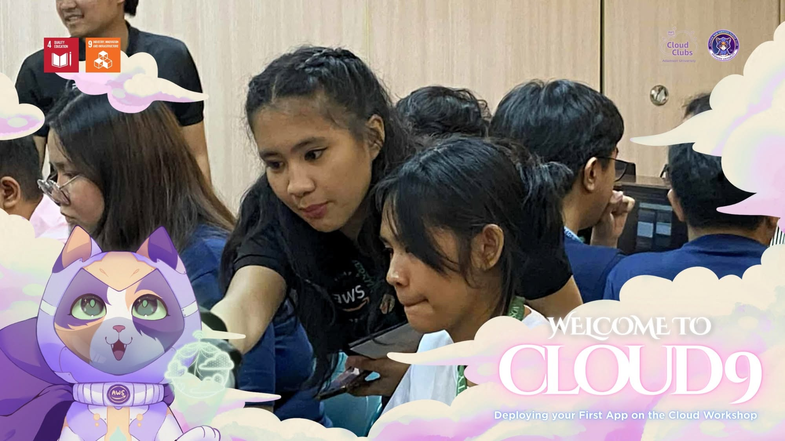
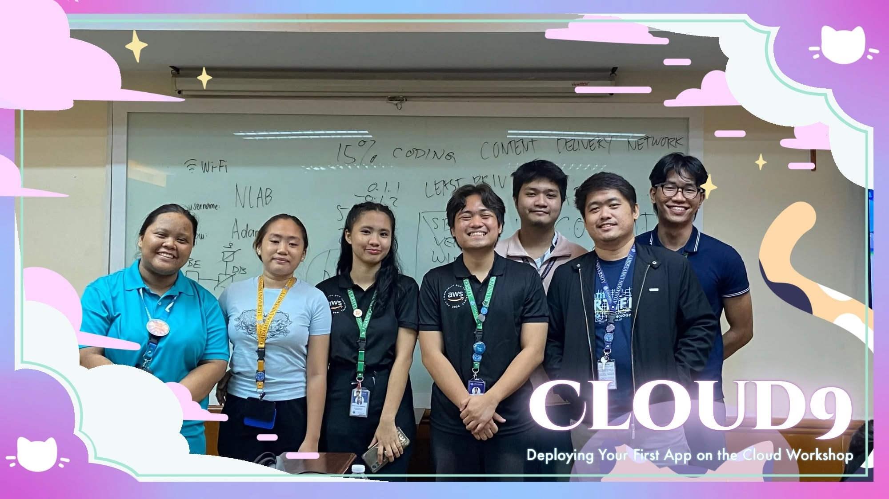

where i've learned
AI Solutions Development Intern
EskwelabsMay 2026 — present remote
Built a production Next.js 14 AI advisor platform — Google OAuth, Supabase with Row Level Security, three AI personas streaming Gemini responses.
President/AWS Student Builder Lead
AWS Student Builder Group — AdamsonAug 2025 — present
Handles cloud club that has 120+ members. Ran hands-on workshops on S3, CloudFront, EC2. Also serve as Executive Secretary for AWS Student User Group Philippines, which means coordinating with 40+ chapters


IT Intern (Remote)
Tutorials DojoJan — Feb 2026 remote
Wrote a published article on Amazon Bedrock. Covered LLM-as-a-Judge methodology, prompt design, and model comparison.
education & certs
B.S. Computer Science
Adamson University · 2024–2028
DOST-SEI Scholar · Dean's List Top 1
Certifications
how i collaborate
independent by default
Give me a brief and a deadline and I'll figure it out. I document my progress and ask questions early.
tools
GitHub, Slack, Notion, Google Meet. Happy to adapt to whatever your team already uses.
availability
GMT+8 (Manila). Open to part-time projects and async collaboration. I work when the work needs me.